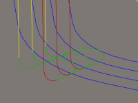
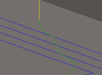

<div id="leadsForAllFinishingPasses"><p>進入および退出をすべての仕上げパスで強制的に出力します。</p>
<table class="tipTable" cellspacing="10">
<tr>
<td><center></center></td>
<td><center></center></td>
</tr><tr>
<td><center><p><b>有効</b></p></center></td>
<td><center><p><b>無効</b></p></center></td>
</tr></table>
<p><b>注意:</b> リードのパラメータは、操作ダイアログ ボックスの［リンク］タブで設定します。</p>
</div>